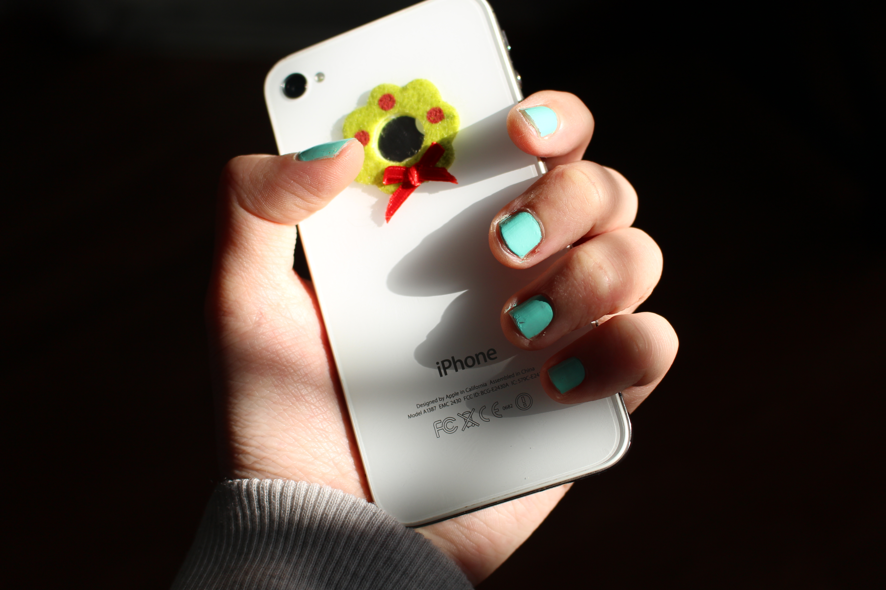
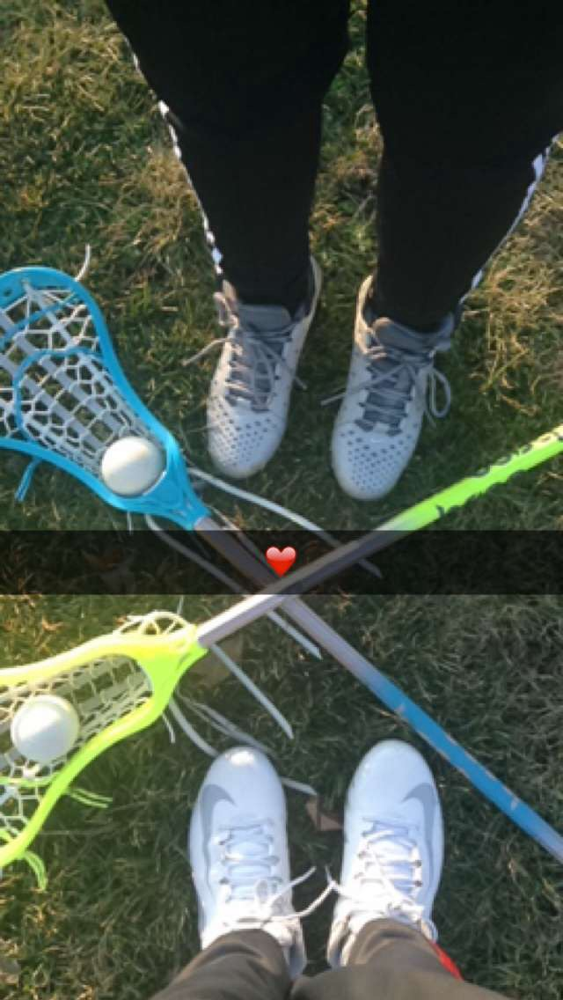

My Daily Hobbies
Below are some of the many things I enjoy doing either during my free time or just to past time.
Photography
 ,I always take my Canon Camera with me during any road trips because I enjoy taking millions of photos of the environment around me.
Lacrosse
Although I am no professional at lacrosse, I enjoy playing this sport; especially with my team.
Surfing on YouTube

When my plans are ruined, I tend to surf on Youtube or go on movie marathons in order to past time. One of my favorite Youtubers that I watch is Tyler Oakly ♡